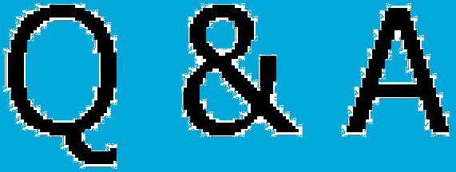

HTML5라고 불리우는 개념은 단순히 웹 문서를 작성할 때 사용되는 마크업 랭귀지(HTML)의 문법적 (syntactic) 버전 뿐만 아니라 새로운 DOM API 스펙을 포함하는 것이다. 문법면에서는 이전에 비해 상당히 간결하고 명확해 졌는데 또한 이전에는 JavaScript를 사용해서 엄청나게 긴 코드를 써서 간접적으로 구현해야 했던 기능들이 정식 엘리먼트로 편입됨으로서 (예를 들어 video ) 간단하게 구현해낼 수 있게 되었고 불필요하게 길게 적어야했던 이전 버전에서 꼭 필요한 부분만 남기도록 바뀌는 등 여러가지 개선점이 생겼다. API면에서, HTML5에서는 비디오 및 오디오와 같은 미디어 엘리먼트에 대한 API뿐를 포함해 오프라인 웹 앱 구현, 문서 편집 등과 같은 다양한 기능에 대한 API가 추가되었으며 WHATWG에 의해 Geolocation, Web SQL, File API, Audio API등이 “Living standard”로 권고되고 있다. HTML5에서의 변화 (W3C) WHATWG 스펙 이를 통해 이전에는 플래시 header 일반적으로 페이지나 해당 섹션의 가장 윗부분에 위치한다. 페이지 맨 위에 쓸 때는 사이트의 제목이 보통 들어가며, 선택적으로 상단바나 검색창 등이 안에 들어갈 수 있다. 태그랑 헷갈리면 매우 곤란하다. section이나 article, aside 등으로 묶어놓은 섹션 안의 헤더 용도로 사용해도 된다. 이건 아래 footer 태그도 마찬가지다. nav 내비게이션(navigation)의 약자로, 일반적으로 상단바 등 사이트를 안내하는 요소에 사용된다. 보통은 안에 ul을 넣어 목록 형태로 사용한다. article 웹 페이지의 내용에 사용하는 태그이다. 문서나 페이지, 사이트에서 독립적으로 배포 혹은 재사용(예를 들어 투고 같은)할 수 있는 섹션에 사용한다. section 웹 페이지의 섹션에 사용하는 태그이다. 웹 페이지를 의미적으로 각각의 파트로 구분하기 위해 쓰는 태그이다. 이 태그를 사용하면 검색엔진이 긁어가지 않는다는 이야기가 있는데 루머다. HTML5 표준 문서에 보면 "요소의 내용을 배포(syndicate)해도 이치에 맞다면 section 요소 대신 article 요소를 사용하기를 권합니다."라는 부분이 있는데, 이 부분의 해석이 잘못 퍼진 것으로 추정된다. aside 본문의 주요 부분을 표시하고 남은 부분을 설명하는 태그이다. 특별한 일이 아니면 사이드바나 광고창 등 중요하지 않은 부분에 사용된다. footer 일반적으로 페이지나 해당 파트의 가장 아랫부분에 위치한다. 페이지 맨 아래에 쓸 때는 사이트의 라이선스, 주소, 연락처 등을 넣는다.
